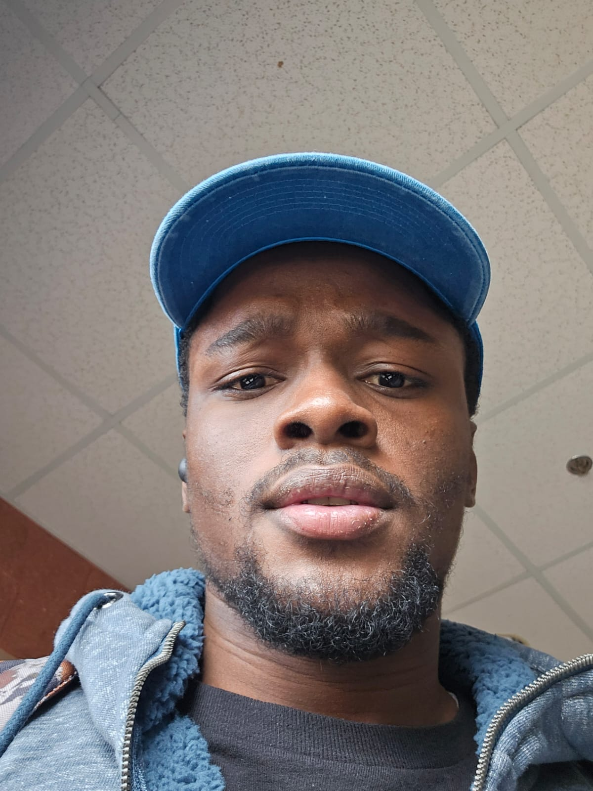

LOST UNDECIDED

OBJECTIVE
Dedicated to growth and going beyond Norms for the improvement of the company
EDUCATION
- Bachelor of Business Administration - Cape Breton University (2023-2027)
WORK EXPERIENCE
SKILL
- Inventory Management
- Attention to Detail
- Teamwork
- Communication
Awards and Cerification
Other Information